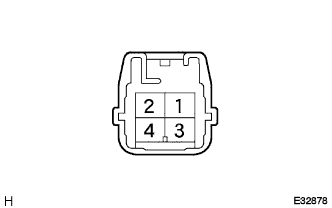

Blow Register Transistor ASSY (Air Conditioning Auto) Single Inspection |
| 1. Blow register transistor ASSY inspection |
|  |
Connect the battery minus to the four terminals of the connector and the battery via the 12V-3.4W valve to the 1 terminal.
When the battery plus is connected to the two terminals, confirm that the valve lights up.
Use SST (Toyota Electrical Tester) to measure the resistance value between 3 connector 3 terminals ← → 4 terminals.